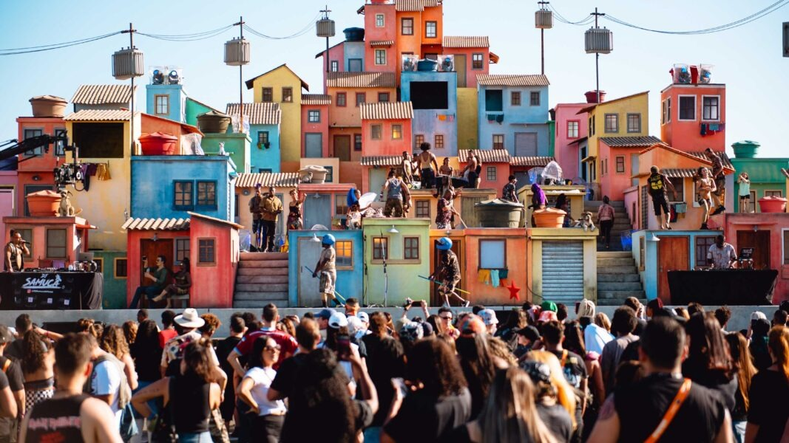

Desde a sua primeira edição em 1985, o Rock in Rio teve a vocação de colocar o Brasil no circuito internacional de grandes shows, reunindo atrações estrangeiras e nacionais. Quatro décadas depois, em 2026, o festival mantém essa premissa, mas ampliou a presença de gêneros das periferias brasileiras como funk, rap, trap, samba e pagode através do Espaço Favela, criado em 2019.
O palco surgiu para dar visibilidade a manifestações culturais marginalizadas. Em 2026, recebeu nomes como Belo, Dennis DJ, Major RD, Xamã, MC Cabelinho, TZ da Coronel e Timbalada. Segundo levantamentos do Itaú Cultural e da FGV, rap e funk são expressões cruciais que movimentam o mercado nacional e possuem circuitos culturais próprios nas comunidades, sem depender de grandes gravadoras.
O público existe e é massivo. Na edição de 2026, o embaixador do espaço, Belo, e Dennis DJ reuniram multidões que lotaram a área disponível, superando públicos de outros palcos. No entanto, a discussão central reside na diferença de estrutura e localização.
Enquanto o Palco Mundo possui dimensões monumentais e 2.400 metros quadrados de LED, o Espaço Favela conta com uma infraestrutura consideravelmente menor, além de ficar a cerca de dez minutos de caminhada do palco principal, com potenciais limitações de som e recursos visuais a médias distâncias.Essa dinâmica levanta um debate profundo: visibilidade ou segregação? Por um lado, o palco atua como uma vitrine inédita; por outro, a concentração desses gêneros no espaço periférico é acompanhada por uma ausência quase total deles nos palcos principais. Quando artistas com imensa capacidade de mobilização continuam restritos a um setor secundário, questionam-se os critérios que determinam quem ocupa o centro do festival.
O desafio da representatividade não anula o mérito histórico do evento, mas expõe como a indústria cultural lida com o potencial de espetáculo das produções periféricas. A questão que permanece para além do Rock in Rio é se essa cultura deve continuar concentrada em um espaço delimitado ou se deve ocupar, em pé de igualdade, os palcos que simbolizam o centro da grande mídia e do entretenimento nacional.